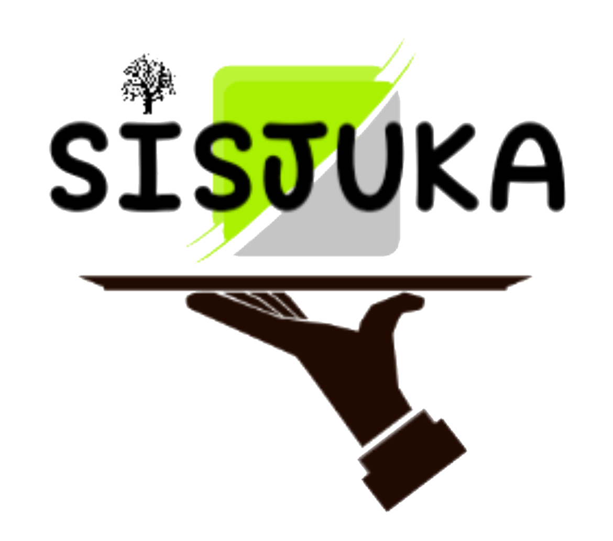

Sijuka adalah salah satu web yang menghubungkan antara penjual kayu dan pembeli kayu. Sijuka menjadi terobosan terbaru untuk para pencari kayu yang biasanya mencari kayu dengan cara manual. Dengan Sijuka mencari kayu bisa lebih mudah karena hanya tinggal mencari di Sijuka.

Tahapan pertama dalam pembuatan aplikasi kami yang berjudul sijuka yaitu mengumpulkan informasi sebanyak mungkin untuk aplikasi yang kami buat,demi kelancaran dalam pembuatan aplikasi tersebut. kami melakukan wawancara ke salah satu perusahan kayu yang bertempat di probolinggo. Disitulah banyak informasi yang kami dapatkan.